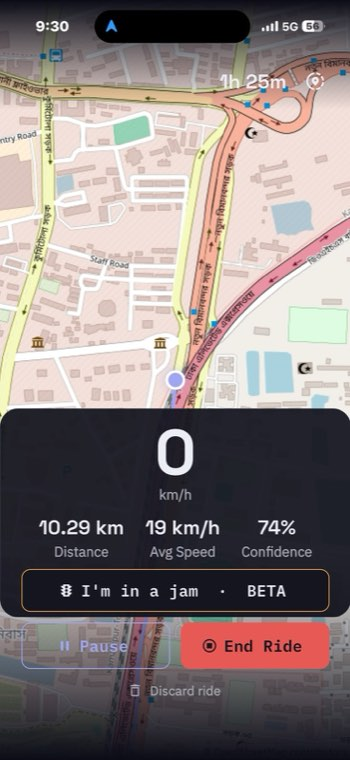
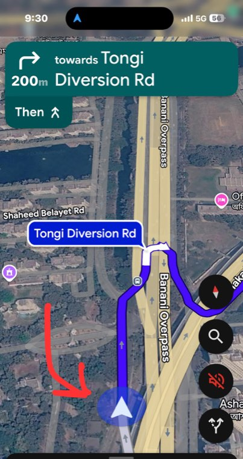
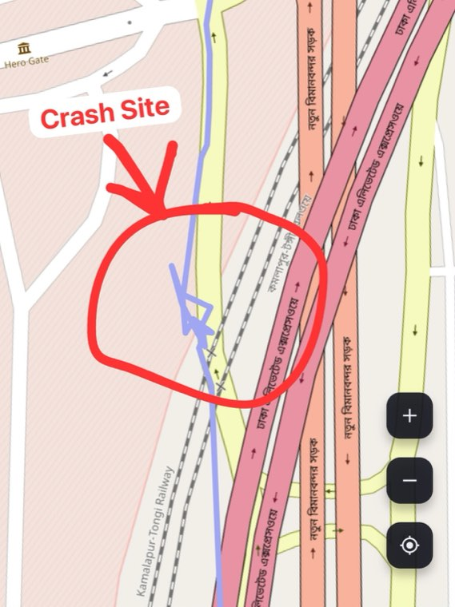
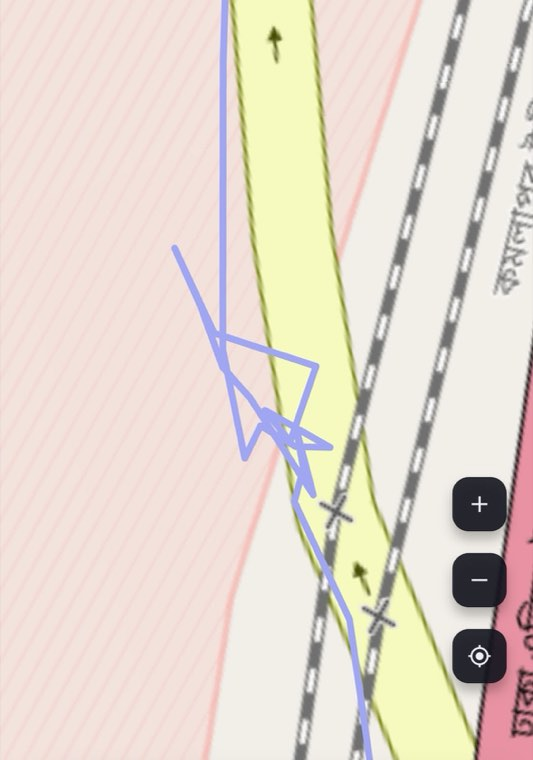

Our founder went down at a level crossing in Dhaka at 12.7 km/h. They got up, the bike started, and the ride carried on. ThrottleIQ saw none of it. We rebuilt the fall from the phone's GPS, its system log and the rider's memory. Here is why it happened, and what changes now.
Everything below comes from three sources that agree: the ride's GPS fixes, the iPhone's own system log, and what the rider remembers.
Speed from the phone's saved GPS fixes. Each dot is one fix. Lines break where fixes are more than 10 s apart.
No single mistake caused this. It took six ordinary things happening in the same ten seconds.
Not knowing the way means checking the way.
45 s of Maps at 25–42 km/h, a minute before a hazard.
Two tracks, meeting the road at a shallow angle.
Stop-and-go at walking pace: the wobbliest speed there is.
Pressure to hurry, right between the two rails.
Throttle opened while the rear tyre met rail number two at an angle.
A tyre climbs an edge it meets square-on. Meet a polished steel rail at a shallow angle and it stops being a bump. It becomes a ramp the tyre slides along instead of over, with a gap beside it waiting for a wheel.
Throttle makes it worse. Under drive, the rear tyre pushes sideways along the rail until it suddenly grips or drops off the edge. When it does, the bike snaps the other way, hard. That's the "rear end shot up with massive momentum to the left".
At 12.7 km/h there's no time to catch it. At 12.7 km/h you're barely balanced, and a kick that size is over in a fraction of a second.
The iPhone noticed: the screen woke itself and the GPS went quiet. ThrottleIQ recorded every metre of the ride and missed the crash completely, because crash detection was switched off and saved no sensor data at all.
We replayed this exact crash, using the real GPS fixes, through the app's detector in five phone positions: thrown from a pocket, still in a pocket with the rider on their side, still in a pocket with the rider on their back, mounted with the engine idling, mounted with the engine off. Even switched on, the old rules would have caught it in only 2 of the 5. So the next day we rebuilt the detector, and it now catches all five. From the next app update it runs quietly on every ride, saves 12 seconds of sensor data around any hard knock, and after the ride asks one question: "Did you fall?" Every answer makes it smarter. The live alarm stays off until those answers say it's ready.




Cross rails as close to 90° as you can. If the road crosses them diagonally, swing your line before the first rail, not between them.
Steady, neutral throttle across the rails. Accelerate only once both wheels are past the last one.
Clearing the first rail clears nothing. The second gets the same care, the same angle, the same patience.
Three seconds of someone else's impatience costs nothing. A fall costs far more. Let them honk.
Check the map while stopped. On the move, use voice guidance or a mount, never your hand.
It was dry that night. After rain, or in morning dew, rails have almost no grip. Slower, squarer, straighter.
Low speed, hands down, then up, checked over, photos and a screenshot taken, ride finished. The aftermath went exactly right, and it gave us everything on this page.
Every rider falls eventually. What matters is what the fall teaches you, and whether your tools can learn from it too. This one taught us more than a month of testing. Ride square, ride patient, and keep the phone in your pocket until you stop.
Get ThrottleIQ →